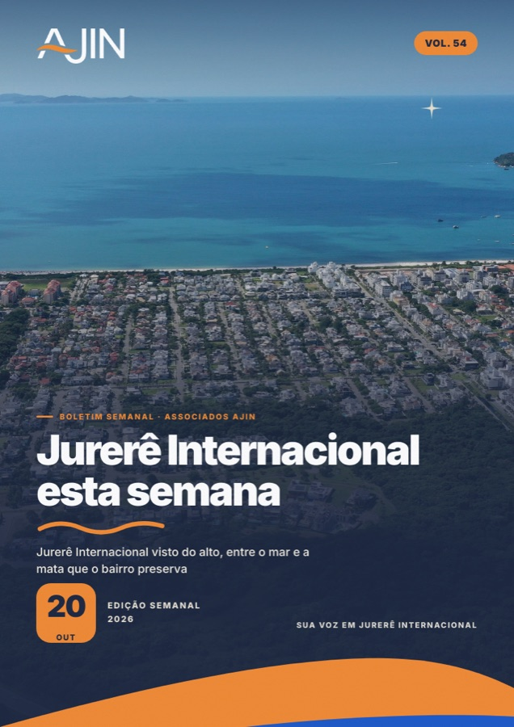

Associação Jurerê Internacional
Uma comunidade que constrói o bairro.

Boletim semanal
O boletim da semana
Edição de 21 de outubro · PDF de 7,6 MB
Baixar o PDF
Falar com a AJIN no WhatsApp
Atendimento, comunicados e grupos oficiais
Site da AJIN
www.ajin.org.br
Associe-se à AJIN
Cadastro com ficha de adesão pelo Gov.br
Edições do boletim
Todas as edições publicadas
Instagram
@ajinjurere
Documentos
Relatório de gestão 2025/2026
PDF de 10,1 MB
Estatuto da AJIN
PDF de 6,4 MB
Contatos
Bairro mais seguro 24h
(48) 3266-4300
Escritório
(48) 3282-1590
E-mail
ajin@ajin.org.br
© 1986 a 2026 Associação Jurerê Internacional